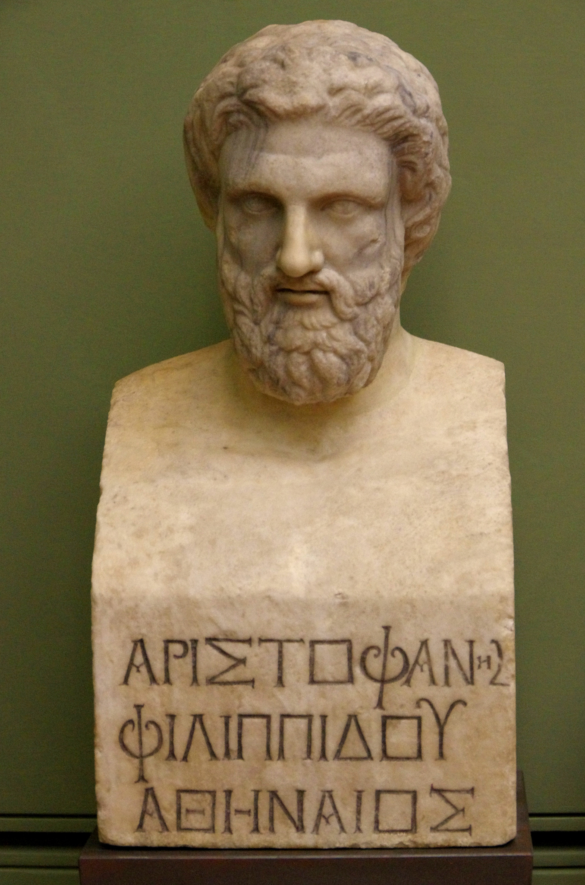

Dati biografici
Le notizie biografiche riguardanti Aristofane sono per la maggior parte frutto di congetture degli studiosi sulla base della sua produzione oppure ricavate dai testi stessi delle sue commedie e, come tali, da prendere con le pinze.
Aristofane nasce sicuramente nel demo di Cidateneo, ad Atene, da Filippo e madre ignota; la data di nascita è spesso posta dagli studiosi tra il 451/450 e 445/444, in base all'età minima necessaria per poter allestire il coro (20 anni) e al fatto che Aristofane dice di aver indugiato un poco nel debuttare da drammaturgo(Cav vv.515-516). La datazione del 450 sembrerebbe preferibile anche per incastrare meglio il dato della calvizie precoce di cui l'autore avrebbe già sofferto nella messinscena dei Cavalieri e che viene più volte sottolineata nei suoi testi(Cav v.550, Pax vv. 767-774, Nu vv. 545-548). Dalla parabasi degli Acarnesi si può anche ricavare che, forse, Aristofane avesse possedimenti ad Egina, ma senza prove documentarie è difficile valutare la veridicità dell'affermazione.
Ebbe due figli, Ararote e Filippo, entrambi commediografi come il padre: al primo, inoltre, sappiamo che affidò la messinscena delle sue ultime due opere, il Cocalo e l'Eolosicone. Sapendo che l'ultima commedia ottenne la vittoria nel 387/386, è ragionevole pensare che il poeta fosse morto poco dopo, nel 385 circa.

